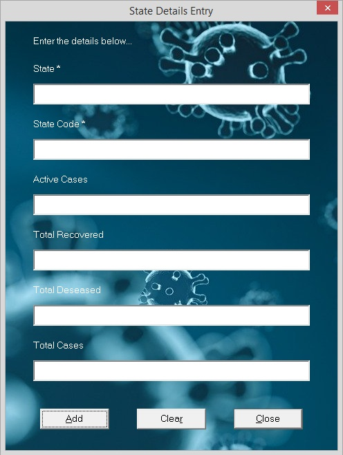

Adding new state's details is only possible if you have an Admin user account in this application. If you are the first user of this application after istallation, then you may get an error saying No Users Found! Go to 'Register New User' in 'Admin' menu to Register First User as shown in the picture below. So if you are the first user, then register yourself first as specified in the error message.
Login window pops up asking for user's login credentials, if Add New Data is selected. Once the login credentials are approved, you are directed to a window where the details of the new state are to be entered. The window looks like the picture shown below.

Once the new states details are typed in the respective text fields, Clicking Add button, appends the new details in to the database and shows a message saying New State Data Added Successfully! Text fields marked with * are not to be left empty. If they are left empty and clicked on Add button, an error message pops up saying Do not Leave the fields with * Empty.
If you feel the data entered in all the test fields is wrong and want to clear all the text, Clear button will take care of that for you. It leaves all the text fields clear and new to let you type the new data again.